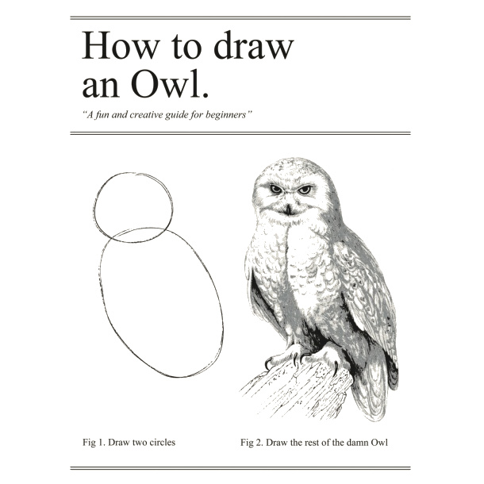

CodeGrades has two broad aims:
CodeGrades will be a for-profit company run for community benefit (where the community are the learners and mentors).
Asking what sort of education we want is the same as asking what sort of society we want, for it is through education that we transmit our culture, knowledge and skill to the next generation. How we transmit our culture, knowledge and skills is equally as important as the content since it also reflects our culture.
CodeGrades are eight cumulative steps for learning the culture, knowledge and skills needed to flourish as a software developer. They’re a programming version of time-proven techniques like music grades, belts in martial arts and lifeguard certification. They fill the gap between the copious amounts of beginner material and professional level information.
(All the introductory material is the equivalent of “draw two cirles”, places like StackOverflow are like “draw the rest of the damn owl”, CodeGrades are the eight missing steps in between.)
CodeGrades bring the knowledge, skills and current practices of a highly experienced community of supportive developers within the reach of all learners of all backgrounds. They provide learners with a clear and sustainable path for growth, all within a supportive and relevant community.
How do they work?
Details of the specific requirements for each grade can be found in the section about grades.
Grades cost between c£40-£120 (depending on level, a similar price to music grades). All resources, tools, support, curriculum & syllabus are free (the costs being swallowed by grading fees).
If you can’t afford fees we’ll have a financial support / fee waiver programme (for example, if you’re a young person in the UK who qualifies for free school meals, your grading will be free). We’ll move mountains so grading is available to everyone, no matter your situation.
Even if you took every grade at full price, the total cost would be a fraction of what you’d pay for a coding bootcamp or classes (and we expect many will skip grades if they make good progress).
Code mentors are experienced professional programmers who are at an advanced enough level to demonstrate the exceptional technical, communication and “people” skills needed to mentor effectively.
Becoming a mentor is a badge of honour: you’re helping (and paid) to nurture your future colleagues, collaborators and users. Furthermore, it’s a public acknowledgement that you have the technical and pedagogical skill to mentor effectively. Finally, it’s fun career development!
Since CodeGrades is run for community benefit we especially welcome members of the open-source community as mentors. It’s hard to be financially recognised for your open-source work, and we hope mentoring is a way to help you support your work.
Having said that, we’d welcome strong candidate mentors from all backgrounds (especially if you identify as coming from an under-represented group in tech). We simply expect you to demonstrate the technical strength, communication skills and compassion as a people-person.
Finally, mentors (since they are experienced professional programmers) are a source of feedback for the future development of the resources, curriculum and syllabus (along with teachers and learners).
Learn more in the section about code mentors.